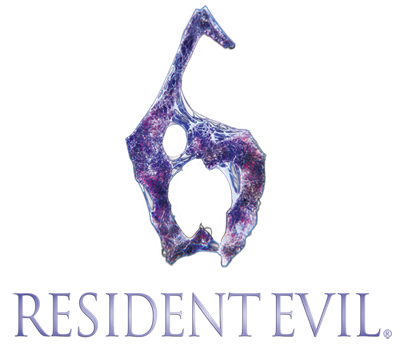

Precio:56€


En el año 2013, el presidente de los Estados Unidos, Adam Benford, ha decidido revelar oficialmente la verdad sobre el incidente de Raccoon City en 1998, creyendo que va a frenar de alguna manera un posible ataque bioterrorista. Pero cuando el lugar es atacado por zombies, Leon S. Kennedy,amigo personal del presidente y superviviente al desastre en Raccoon City,se adentrará en el primer capítulo de esta entrega tomando una decisión muy dura,junto a su nueva compañera Helena Harper.